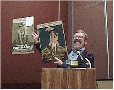
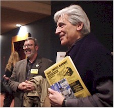

Contents | Features | Reviews | News | Archives | Store

Contents | Features | Reviews | News | Archives | Store
 |
Cinefest 1998 by Elias Savada |
United I fly. United they stall. It’s Wednesday night (Thursday morning, actually) and after a cramped and long-delayed flight aboard one of those miniature sardine-can United Express flights, I have arrived in Syracuse, New York. Home of the Orangemen. Home of March Madnesday. Home of Cinefest.
Say what? I have made annual pilgrimage to this upstate city for the last ten years not to cheer on the local basketball team but to spend a long weekend sitting in a darkened hotel ballroom with hundreds of other old farts (and some young ones too!), my butt frozen in uncomfortable chairs from sunrise to after sunset, watching amusing, forgotten, and sometimes enlightening old movies. Nearly all the titles shown over the course of this four-day event have something in common with this magazine ... it’s namesake. They are were originally developed on nitrate film stock, an extremely unstable and very flammable product (phased out of use by the early 1950s) prone to spontaneous combustion. Like some of my reviews. Thankfully, the viewings this year will all be from safety prints on acetate stock. Maybe we could change our name to acetateonline.com, but it doesn’t have the same sense of daring and anger.
Ah, sweet Cinefest, now in it’s 18th year, the product of a group of stalwart cinephiles whose love for the medium has resulted in one of numerous conclaves throughout the U.S. of A. that allow for fans of silent and sound films to gather for hours in the darkness, or browse through movie reels and memorabilia in an adjoining dealer hall, or schmooze at the bar with old friends and new here at the Four Points "Convention Center" in suburban Liverpool, away from the hustle of downtown traffic and a 5-minute ride from Hancock International Airport. This region of the Empire State is often under a layer of snow at this time of year, but the temperatures now are above freezing and instead of snow it’s a slow, steady drizzle. In 1997’s edition, there was a continuous snowfall blanketing the vicinity, a few inches here and there. Sometimes we have a foot or more. I think El Nino might give us a break this time. You can bring your boots, but few venture out as there are no nearby restaurants in walking distance.
As a film historian, I first attended one of these gatherings in Washington DC in the early 1970s. That party was Cinecon, which was then a roaming show but is now solidly entrenched in Los Angeles over the Labor Day weekend. I haven’t been to that west coast experience, which often brings in stars of yesteryear, while Cinefest pretty much is a straight forward movie show.
The participants range from old film fans, students from the area universities, and anyone else willing to fork over the few bucks ($55 at the door) to attend. Among the "guests" are Entertainment Tonight’s Leonard Maltin, whose Sunday morning auction is a don’t-miss hour, and noted film archivists and preservationists Paolo Cherchi Usai, Chris Horak, David Francis, and David Sheppard. Richard Gordon (who introduced me to this "special" event) and his brother Alex are film producers and writers who are always fun to be with.
And of course there are movies. Starting Thursday at 10 A.M. and continuing (with breaks for meals) through Sunday until around 6 P.M. Figure 6-8 feature-length programs, a smattering a shorts and other programs, and you get a real good cross-sampling of some rarely seen footage. Including on the schedule are The Shake Down (1928), director William Wyler’s lost classic with James Murray and Barbara Kent, Derelict with George Bancroft and William Boyd, the Harold Lloyd film Welcome Danger, Heart of the Hills starring Mary Pickford and John Gilbert, James Thurber’s 13 Clocks (the first tv musical, starring Basil Rathbone and Sir Cedric Hardwick), as well as salutes to George Gershwin, Technicolor, and Biograph silent shorts.
Of course we don’t watch silent films in silence. The stellar talents of Jon Mirsalis and George Eastman House’s Phil Carli provide keyboard (as in piano, not the kind I’m banging on right now) support for the 14 silent films in the program.
The highlight is always the Saturday morning show, usually held at the hugely beautiful former Loews State Theatre downtown. We’ve occasionally be bussed to the George Eastman House an hour or so down the New York Thruway, but in recent memory, we’ve stayed local. This year we’ll be thrilled with the 102-minute restored version of the silent classic The Lost World. Years before Spielberg and still just as exciting. Walt Disney Co. preservationist Scott MacQueen will also be presenting some rare reels from Mickey’s vaults.
I’ll be posting another installment later in the weekend and also will provide some web links to some interesting silent film sites. Organizer Phil Serling (license plate PHILM1), firmly entrenched in bygone days, hasn’t set up a website because he doesn’t have a computer. Never has and probably never will. In the meantime, you might want to visit the alt.movies.silent newsgroup to pick up some tidbits on goings on in this off-the-beaten-path tribute to the glory days of cinema.
Contents | Features | Reviews | News | Archives | Store
Copyright © 1999 by Nitrate Productions, Inc. All Rights Reserved.